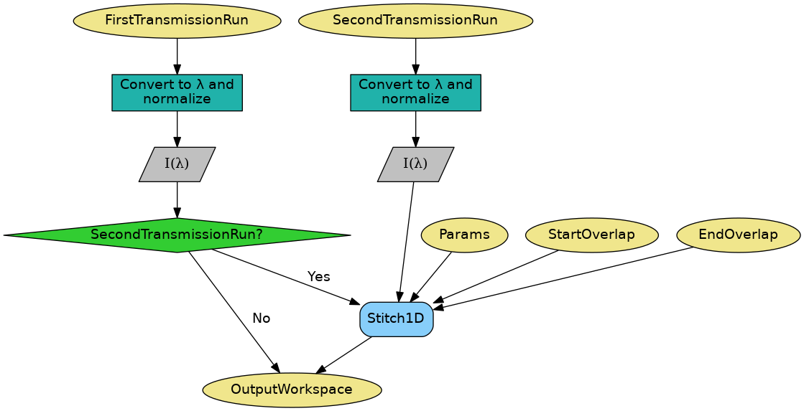
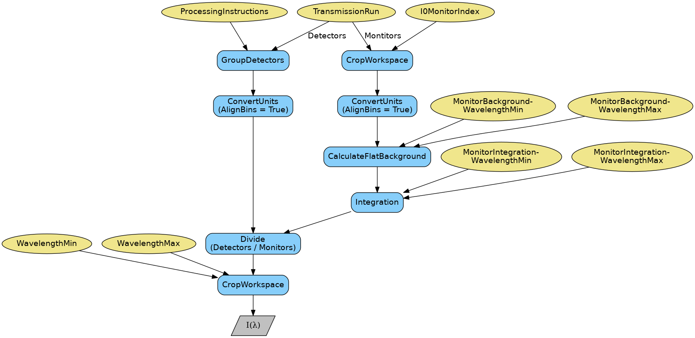

CreateTransmissionWorkspace dialog.
Table of Contents
Creates a transmission run workspace in wavelength from one or two input workspaces in TOF.
| Name | Direction | Type | Default | Description |
|---|---|---|---|---|
| FirstTransmissionRun | Input | MatrixWorkspace | Mandatory | First transmission run. Corresponds to the low wavelength transmision run if a SecondTransmissionRun is also provided. |
| SecondTransmissionRun | Input | MatrixWorkspace | High wavelength transmission run. Optional. Causes the first transmission run to be treated as the low wavelength transmission run. | |
| ProcessingInstructions | Input | string | Mandatory | Grouping pattern on spectrum numbers to yield only the detectors of interest. See GroupDetectors for details. |
| WavelengthMin | Input | number | Mandatory | Wavelength minimum in angstroms |
| WavelengthMax | Input | number | Mandatory | Wavelength maximum in angstroms |
| I0MonitorIndex | Input | number | Optional | I0 monitor workspace index |
| MonitorBackgroundWavelengthMin | Input | number | Optional | Wavelength minimum for monitor background subtraction in angstroms. |
| MonitorBackgroundWavelengthMax | Input | number | Optional | Wavelength maximum for monitor background subtraction in angstroms. |
| MonitorIntegrationWavelengthMin | Input | number | Optional | Wavelength minimum for integration in angstroms. |
| MonitorIntegrationWavelengthMax | Input | number | Optional | Wavelength maximum for integration in angstroms. |
| NormalizeByIntegratedMonitors | Input | boolean | True | Normalize by dividing by the integrated monitors. |
| Params | Input | dbl list | A comma separated list of first bin boundary, width, last bin boundary. These parameters are used for stitching together transmission runs. Values are in wavelength (angstroms). This input is only needed if a SecondTransmission run is provided. | |
| StartOverlap | Input | number | Optional | Start wavelength for stitching transmission runs together. Only used if a second transmission run is provided. |
| EndOverlap | Input | number | Optional | End wavelength (angstroms) for stitching transmission runs together. Only used if a second transmission run is provided. |
| ScaleRHSWorkspace | Input | boolean | True | Scale the right-hand-side or left-hand-side workspace. Only used if a second transmission run is provided. |
| Debug | Input | boolean | False | Whether to enable the output of extra workspaces. |
| OutputWorkspace | Output | MatrixWorkspace | Output workspace in wavelength. |
Creates a transmission run workspace given one or two TOF workspaces. If two workspaces are provided, then the first workspace is considered a low wavelength transmission run, and the second workspace is considered a high wavelength transmission run.
Both input workspaces must have X-units of TOF. They are first converted to units of wavelength and then stitched together using Stitch1D v3, Params, StartOverlap and EndOverlap. A single output workspace is generated with X-units of wavelength in angstroms.
The diagram above illustrates the main steps in the algorithm. Below is a more detailed diagram describing how transmission workspaces are converted to units of wavelength and normalized by monitors. First, detectors and monitors are extracted from the input workspace using GroupDetectors v2 and CropWorkspace v1 respectively, using ProcessingInstructions in the first case and I0MonitorIndex in the second case. Then, each of the resulting workspaces is converted to wavelength (note that AlignBins is set to True for this), detectors are normalized by monitors, and the resulting workspace is cropped in wavelength according to WavelengthMin and WavelengthMax, which are both mandatory parameters. Note that the normalization by monitors is optional, and only takes place if I0MonitorIndex, MonitorBackgroundWavelengthMin and MonitorBackgroundWavelengthMax are provided. In this case, the monitor of interest will be extracted from the input workspace, converted to wavelength, and its background will be subtracted according to MonitorBackgroundWavelengthMin and MonitorBackgroundWavelengthMax. If MonitorIntegrationWavelengthMin and MonitorIntegrationWavelengthMax are provided, monitors will be integrated according to that range. If monitors are not integrated, there is an addition step in which detectors will be rebinned to monitors using RebinToWorkspace v1, to ensure that the normalization can be performed. Below is a summary of the main steps in the algorithm. For the sake of clarity, all possible steps are illustrated, even if some of them are optional.
This is version 2 of the algorithm. For version 1, please see here.
Note
To run these usage examples please first download the usage data, and add these to your path. In MantidPlot this is done using Manage User Directories.
Example - Create a transmission run
trans = Load(Filename='INTER00013463.nxs')
transWS = CreateTransmissionWorkspace(FirstTransmissionRun = trans,
I0MonitorIndex = 2,
ProcessingInstructions = '4,5',
WavelengthMin = 1,
WavelengthMax = 17,
MonitorBackgroundWavelengthMin = 15,
MonitorBackgroundWavelengthMax = 17,
MonitorIntegrationWavelengthMin = 4,
MonitorIntegrationWavelengthMax = 10)
print("The first four transWS Y values are:")
for i in range (4):
print("{:.4f}".format(transWS.readY(0)[i]))
Output:
The first four transWS Y values are:
0.0052
0.0065
0.0088
0.0123
Example - Create a transmission run from two runs
trans1 = Load(Filename='INTER00013463.nxs')
trans2 = Load(Filename='INTER00013464.nxs')
transWS = CreateTransmissionWorkspace(FirstTransmissionRun = trans1,
SecondTransmissionRun = trans2,
Params = [1.5,0.02,17],
StartOverlap = 10.0,
EndOverlap = 12.0,
I0MonitorIndex = 2,
ProcessingInstructions = '4,5',
WavelengthMin = 1,
WavelengthMax = 17,
MonitorBackgroundWavelengthMin = 15,
MonitorBackgroundWavelengthMax = 17,
MonitorIntegrationWavelengthMin = 4,
MonitorIntegrationWavelengthMax = 10)
print("The first four transWS Y values are:")
for i in range (4):
print("{:.4f}".format(transWS.readY(0)[i]))
Output:
The first four transWS Y values are:
0.0563
0.0561
0.0570
0.0578
Categories: AlgorithmIndex | Reflectometry
C++ source: CreateTransmissionWorkspace2.cpp (last modified: 2019-10-28)
C++ header: CreateTransmissionWorkspace2.h (last modified: 2019-10-28)